Online Calibration test requirement & data analysis
Testing requirements
1. Generalization tests should be fully covered in the following scenes
|
Road conditions (The confidence of the 2D lane line test can be used as an objective standard) |
good |
|
|
bad |
|
|
|
Weather conditions |
good |
|
|
bad |
|
|
|
Driving habit |
good |
|
|
bad |
|
2. Record data as required
Record Rosbag, including the following topic
/C/Camera/FrontTele
/C/Camera/FrontWide
/A/viper_driving/xper_viper_lane_and_edge_senderport
/A/local_msf/xper_local_loc_result_senderport
/A/ara_com_gateway/sensor_calib_parameter_senderport
/A/ara_com_gateway.offline_sensor_calib_parameter_senderport
/A/ara_com_gateway.online_sensor_calib_parameter_senderport
/A/online_calibration/online_calib_result_senderport
/A/online_calibration/on_line_key_info_debug
Copy standard online_calibration.json
The intermediate result of the copy /data /call
vehicle_movement_status.txt
side_view_camera_front_tele.txt
side_view_camera_front_wide.txt
Restart the ADCC, read the offline and online calibration parameters in Persistency in order, and save it as read_xxtrinsic.txt
Open the TJA function, observe and record the neutrality
data analysis
Take Val/12848C20240417 as an example to introduce how to use automated analysis tools (more data, please access online calibration data archive paths)
1. Prepare data (support analysis of some files)
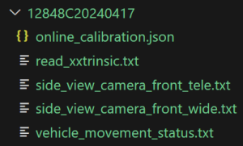
2. Running tools
xcalib-prod/online_calibration/script/online_calib_analyze.py
#!/usr/bin/env python3# -*- coding: utf-8 -*- """Created on 2024-04-19@ author: Li Han@ function: auto analyze online calibration data@ usage: python online_calib_analyze.py [folder_path]""" import osimport reimport mathimport timeimport datetimeimport argparseimport numpy as npimport matplotlib.pyplot as pltclass HistogramStatistics: def __init__(self): self.m_data_capacity = 1000 self.m_bin_number = 120 self.m_bin_width = 0.05 self.m_bin_coefficient = 3.0 self.m_lower_bound = 0.0 self.m_upper_bound = 0.0 self.m_data = [] self.m_histogram = [] def init(self, path, sensor_name, delta_angle): self.path = path self.m_sensor_name = sensor_name self.m_delta_angle = delta_angle self.m_histogram = np.zeros(self.m_bin_number, dtype=np.uint32) self.m_lower_bound = -(self.m_bin_number * self.m_bin_width) / 2.0 self.m_upper_bound = (self.m_bin_number * self.m_bin_width) / 2.0 def add_data(self, value): if value >= self.m_lower_bound and value <= self.m_upper_bound: self.m_data = np.append(self.m_data, value) index = int((value - self.m_lower_bound) / self.m_bin_width) self.m_histogram[index] += 1 def calculate_mode(self): max_bin_index = 0 max_bin_count = 0 second_bin_count = 0 for i in range(len(self.m_histogram)): if self.m_histogram[i] > max_bin_count: if abs(i - max_bin_index) > 1: second_bin_count = max_bin_count max_bin_count = self.m_histogram[i] max_bin_index = i if max_bin_count < self.m_bin_coefficient * second_bin_count: print(f"--> replace mode by mean (first_bin_count:{max_bin_count} second_bin_count:{second_bin_count})") return self.m_lower_bound + (max_bin_index * self.m_bin_width) + (self.m_bin_width / 2.0) def calculate_mean(self): return np.mean(self.m_data) def calculate_standard_deviation(self): mean = self.calculate_mean() variance = np.var(self.m_data) return math.sqrt(variance) def calculate_median(self): return np.median(self.m_data) def calculate_variance(self): return np.var(self.m_data) def calculate_skewness(self): mean = self.calculate_mean() variance = self.calculate_variance() skewness = np.mean((self.m_data - mean) ** 3) / math.pow(variance, 1.5) return skewness def calculate_kurtosis(self): mean = self.calculate_mean() variance = self.calculate_variance() kurtosis = np.mean((self.m_data - mean) ** 4) / math.pow(variance, 2) return kurtosis def is_normal_distribution(self): mean = self.calculate_mean() standard_deviation = self.calculate_standard_deviation() threshold = 0.05 for value in self.m_data: score = (value - mean) / standard_deviation probability = 0.5 * (1 + math.erf(score / math.sqrt(2))) if abs(probability - 0.5) > threshold: return False return True def print_statistics(self): print(f"///// {self.m_delta_angle} histogram statistics of {self.m_sensor_name} /////") print(f"--> bound: {self.m_lower_bound:.3f} - {self.m_upper_bound:.3f}") print(f"--> mean: {self.calculate_mean():.3f}") print(f"--> standard deviation: {self.calculate_standard_deviation():.3f}") print(f"--> median: {self.calculate_median():.3f}") print(f"--> variance: {self.calculate_variance():.3f}") print(f"--> skewness: {self.calculate_skewness():.3f}") print(f"--> kurtosis: {self.calculate_kurtosis():.3f}") print(f"--> {'good' if self.is_normal_distribution() else 'bad'} normal distribution") def plot_histogram(self): plt.figure(figsize=(8, 6)) plt.hist(self.m_data, bins='auto', color='skyblue', alpha=0.7) plt.xlabel(f'{self.m_delta_angle}') plt.ylabel('histogram frequency') plt.title(f'{self.m_sensor_name}') mode = self.calculate_mode() mean = self.calculate_mean() plt.axvline(x=mode, color='r', linestyle='--', label='mode') plt.axvline(x=mean, color='g', linestyle='--', label='mean') plt.text(mode, 0.95 * plt.ylim()[1], f"mode: {mode:.3f}", color='r', ha='center', va='top') plt.text(mean, 0.9 * plt.ylim()[1], f"mean: {mean:.3f}", color='g', ha='center', va='top') plt.legend() plt.grid(True) plt.savefig(os.path.join(self.path, f'{self.m_sensor_name}_{self.m_delta_angle}_histogram.png'))def process_online_calibration(file): print("\n----- ----- ----- online_calibration ----- ----- -----") keyinfos = ["convergence time", "last_ypr", "last_std"] keyinfo_pattern = re.compile(r'"message_string"\s*:\s*"(.+)"\s*,\s*"component"') runtime_pattern = re.compile(r'online update time cost: (\d+(\.\d+)?)') with open(file, 'r') as f: lines = f.readlines() runtime = [] # -- release daily build not analyze for num, line in enumerate(lines): line = line.strip() for key in keyinfos: if key in line: if keyinfo_pattern.search(line): print(f'{keyinfo_pattern.search(line).group(1)}') break if runtime_pattern.findall(line): for match in runtime_pattern.findall(line): runtime.append(float(match[0])) fig = plt.figure(figsize=(15, 6), dpi=100) plt.xlabel("frame", fontsize=10) plt.ylabel('runtime (ms)', fontsize=10) plt.plot(runtime, '-', color='blue') plt.grid(axis='y') plt.savefig(os.path.join(os.path.dirname(file), "runtime.png"), bbox_inches='tight', pad_inches=0.1) plt.close()def process_camera(file, sensor_name): def plot_vaild_frames(data): fig, axs = plt.subplots(1, 3, figsize=(18, 5)) euler_angle_threshold = 0.3 plt.title(f'{sensor_name}') # picture-1: delta euler angle axs[0].plot(data[0], label='delta_yaw') axs[0].plot(data[3], label='delta_roll') axs[0].set_ylabel('delta euler angle') axs[0].legend() axs[0].grid(True) # picture-2: mean axs[1].plot(data[1], label='delta_yaw_mean') axs[1].plot(data[4], label='delta_roll_mean') axs[1].set_ylabel('mean') axs[1].axhline(y=euler_angle_threshold, color='r', linestyle='--') axs[1].axhline(y=-euler_angle_threshold, color='r', linestyle='--') axs[1].legend() axs[1].grid(True) # picture-3: standard deviation axs[2].plot(data[2], label='delta_yaw_std') axs[2].plot(data[5], label='delta_roll_std') axs[2].set_ylabel('standard deviation') axs[2].legend() axs[2].grid(True) plt.tight_layout() plt.savefig(os.path.join(os.path.dirname(file), sensor_name + ".png")) plt.close() def plot_histogram_statistics(path, sensor_name, delta_angle, data): hs = HistogramStatistics() hs.init(path, sensor_name, delta_angle) for value in data: hs.add_data(value) hs.print_statistics() hs.plot_histogram() sensor_name = os.path.splitext(os.path.basename(file))[0] print(f"\n----- ----- ----- {sensor_name} ----- ----- -----") with open(file, 'r') as f: lines = f.readlines() offline_calib = lines[1].split(']')[1].strip().split() yaw_offline_calib = float(offline_calib[0].split(':')[1]) pitch_offline_calib = float(offline_calib[1].split(':')[1]) roll_offline_calib = float(offline_calib[2].split(':')[1]) print(f"[offline calib] yaw: {yaw_offline_calib} pitch: {pitch_offline_calib} roll: {roll_offline_calib}") timestamp = float(lines[2].split(":")[1].strip()) print(time.strftime("[online calib] %Y-%m-%d %H:%M", time.localtime(timestamp))) skip_lines = [0, 1, 2] pattern = re.compile(r'\[online calib\] convergence time:(\d+) timestamp:(\d+\.\d+)(.*)') for num, line in enumerate(lines): if pattern.search(line.strip()): skip_lines.append(num) convergence_time, timestamp, values = pattern.search(line.strip()).groups() values = list(map(float, values.split())) print(f'convergence_time:{convergence_time} ', datetime.datetime.fromtimestamp(float(timestamp)).strftime("%Y-%m-%d %H:%M")) print(f"--> [current convergence] yaw: {values[0]:.3f} pitch: {values[1]:.3f} roll: {values[2]:.3f}") print(f"--> [last mean] yaw: {values[3]:.3f} pitch: {values[4]:.3f} roll: {values[5]:.3f}") print(f"--> [last standard deviation] yaw: {values[6]:.3f} pitch: {values[7]:.3f} roll: {values[8]:.3f}") data = [line.strip().split() for idx, line in enumerate(lines) if idx not in skip_lines] data_transposed = list(map(list, zip(*[list(map(float, row)) for row in data]))) print(f"vaild frames number: {len(data_transposed[0])}") plot_vaild_frames(data_transposed) plot_histogram_statistics(os.path.dirname(file), sensor_name, "delta_yaw", data_transposed[0]) plot_histogram_statistics(os.path.dirname(file), sensor_name, "delta_roll", data_transposed[3])def process_vehicle_movement_status(file): print("\n----- ----- ----- vehicle_movement_status ----- ----- -----") vehicle_speed_reference = 10.0 yaw_rate_threshold = 0.01 x_acceleration_threshold = 0.5 y_acceleration_threshold = 0.1 centrifugal_acceleration_threshold = 0.1 with open(file, 'r') as f: lines = f.readlines() data = [line.strip().split() for line in lines[1:]] timestamps_ns = [float(row[0]) / 1e9 for row in data] timestamps = [ts - timestamps_ns[0] for ts in timestamps_ns] others = [list(map(float, row[1:])) for row in data] data_transposed = list(map(list, zip(*others))) fig, axs = plt.subplots(3, 2, figsize=(15, 10)) # picture-1: vehicle_speed & vehicle_speed_mean axs[0, 0].plot(timestamps, data_transposed[0], label='vehicle speed') axs[0, 0].plot(timestamps, data_transposed[1], label='vehicle speed mean') axs[0, 0].set_xlabel(f'second (threshold: {vehicle_speed_reference} m/s)') axs[0, 0].set_ylabel('vehicle speed (m/s)') axs[0, 0].axhline(y=vehicle_speed_reference, color='g', linestyle='--') axs[0, 0].legend() axs[0, 0].grid(True) # picture-2: yaw_rate & yaw_rate_mean axs[0, 1].plot(timestamps, data_transposed[2], label='yaw rate') axs[0, 1].plot(timestamps, data_transposed[3], label='yaw rate mean') axs[0, 1].set_xlabel(f'second (threshold: {yaw_rate_threshold} rad/s)') axs[0, 1].set_ylabel('yaw rate (rad/s)') axs[0, 1].axhline(y=0.0, color='g', linestyle='--') axs[0, 1].axhline(y=yaw_rate_threshold, color='r', linestyle='--') axs[0, 1].axhline(y=-yaw_rate_threshold, color='r', linestyle='--') axs[0, 1].legend() axs[0, 1].grid(True) # picture-3: x_acceleration & x_acceleration_filter_mean axs[1, 0].plot(timestamps, data_transposed[4], label='x acceleration') axs[1, 0].plot(timestamps, data_transposed[5], label='x acceleration filter mean') axs[1, 0].set_xlabel(f'second (threshold: {x_acceleration_threshold} m/s2)') axs[1, 0].set_ylabel('x acceleration (m/s2)') axs[1, 0].axhline(y=0.0, color='g', linestyle='--') axs[1, 0].axhline(y=x_acceleration_threshold, color='r', linestyle='--') axs[1, 0].axhline(y=-x_acceleration_threshold, color='r', linestyle='--') axs[1, 0].legend() axs[1, 0].grid(True) # picture-4: y_acceleration & y_acceleration_filter_mean axs[1, 1].plot(timestamps, data_transposed[6], label='y acceleration') axs[1, 1].plot(timestamps, data_transposed[7], label='y acceleration filter mean') axs[1, 1].set_xlabel(f'second (threshold: {y_acceleration_threshold} m/s2)') axs[1, 1].set_ylabel('y acceleration (m/s2)') axs[1, 1].axhline(y=0.0, color='g', linestyle='--') axs[1, 1].axhline(y=y_acceleration_threshold, color='r', linestyle='--') axs[1, 1].axhline(y=-y_acceleration_threshold, color='r', linestyle='--') axs[1, 1].legend() axs[1, 1].grid(True) # picture-5: centrifugal_acceleration axs[2, 0].plot(timestamps, data_transposed[8], label='centrifugal acceleration') axs[2, 0].set_xlabel(f'second (threshold: {centrifugal_acceleration_threshold} m/s2)') axs[2, 0].set_ylabel('centrifugal acceleration (m/s2)') axs[2, 0].axhline(y=0.0, color='g', linestyle='--') axs[2, 0].axhline(y=centrifugal_acceleration_threshold, color='r', linestyle='--') axs[2, 0].axhline(y=-centrifugal_acceleration_threshold, color='r', linestyle='--') axs[2, 0].legend() axs[2, 0].grid(True) # picture-6: straight_driving axs[2, 1].plot(timestamps, data_transposed[9], label='straight driving') axs[2, 1].set_xlabel('second') axs[2, 1].set_ylabel('straight driving') axs[2, 1].legend() plt.tight_layout() plt.savefig(os.path.join(os.path.dirname(file), "vehicle_movement_status.png")) plt.close()def process_read_xxtrinsic(file): print("\n----- ----- ----- read_xxtrinsic ----- ----- -----") def find_transform_world(lines, xxtrinsic, sensor_name): found_xxtrinsic = False found_sensor = False pattern = rf"extrinsic for sensor\d \({re.escape(sensor_name)}\)" for num, line in enumerate(lines): if xxtrinsic in line: found_xxtrinsic = True elif found_xxtrinsic and re.search(pattern, line): found_sensor = True elif found_sensor and 'transform_world' in line: if num + 1 < len(lines): values = lines[num + 1].strip().split() return [float(value) for value in values] def transform_to_euler_angle(transform): scale = 180 / np.pi roll = scale * np.arctan2(transform[2, 1], transform[2, 2]) pitch = scale * np.arctan2(-transform[2, 0], np.sqrt(transform[0, 0] * transform[0, 0] + transform[1, 0] * transform[1, 0])) yaw = scale * np.arctan2(transform[1, 0], transform[0, 0]) return [roll, pitch, yaw] def calculate_euler_angle_difference(sensor_name, transform_offline, transform_online): euler_angles_offline = transform_to_euler_angle(np.array(transform_offline).reshape(4, 4)) euler_angles_online = transform_to_euler_angle(np.array(transform_online).reshape(4, 4)) euler_angle_difference = np.array(euler_angles_online) - np.array(euler_angles_offline) print(f"{sensor_name}") print("--> transform_offline:", transform_offline) print("--> transform_online", transform_online) print("--> euler_angles_offline: {:.3f} {:.3f} {:.3f}".format(*euler_angles_offline)) print("--> euler_angles_online: {:.3f} {:.3f} {:.3f}".format(*euler_angles_online)) print("--> euler angle difference: {:.3f} {:.3f} {:.3f}".format(*euler_angle_difference)) with open(file, 'r') as f: lines = f.readlines() front_wide_offline = find_transform_world(lines, 'offline xxtrinsic part', 'SIDE_VIEW_CAMERA_FRONT_WIDE') front_wide_online = find_transform_world(lines, 'online xxtrinsic part', 'SIDE_VIEW_CAMERA_FRONT_WIDE') calculate_euler_angle_difference("[front wide camera]", front_wide_offline, front_wide_online) front_tele_offline = find_transform_world(lines, 'offline xxtrinsic part', 'SIDE_VIEW_CAMERA_FRONT_TELE') front_tele_online = find_transform_world(lines, 'online xxtrinsic part', 'SIDE_VIEW_CAMERA_FRONT_TELE') calculate_euler_angle_difference("[front tele camera]", front_tele_offline, front_tele_online)def search_files(folder): online_calibration_json = os.path.join(folder, "online_calibration.json") if os.path.isfile(online_calibration_json): process_online_calibration(online_calibration_json) else: print("[ERROR] could not find:", online_calibration_json) front_wide = os.path.join(folder, "side_view_camera_front_wide.txt") if os.path.isfile(front_wide): process_camera(front_wide, "side_view_camera_front_wide") else: print("[ERROR] could not find:", front_wide) front_tele = os.path.join(folder, "side_view_camera_front_tele.txt") if os.path.isfile(front_tele): process_camera(front_tele, "side_view_camera_front_tele") else: print("[ERROR] could not find:", front_tele) vehicle_movement_status = os.path.join(folder, "vehicle_movement_status.txt") if os.path.isfile(vehicle_movement_status): process_vehicle_movement_status(vehicle_movement_status) else: print("[ERROR] could not find:", vehicle_movement_status) read_xxtrinsic = os.path.join(folder, "read_xxtrinsic.txt") if os.path.isfile(read_xxtrinsic): process_read_xxtrinsic(read_xxtrinsic) else: print("[ERROR] could not find:", read_xxtrinsic)if __name__ == "__main__": parser = argparse.ArgumentParser(description='auto analyze online calibration data') parser.add_argument('folder', type=str, help='the path of online calibration data') args = parser.parse_args() search_files(args.folder)$ python online_calib_analyze.py value/12848c20240417 View terminal printing
$ python online_calib_analyze.py value/12848c20240417> online_calib_analyze.log to save the terminal log
runtime
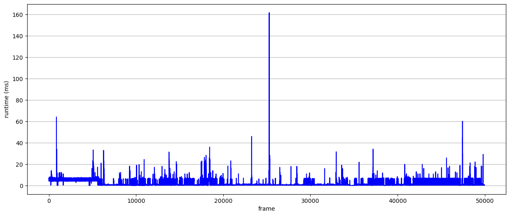
Vehicle movement status
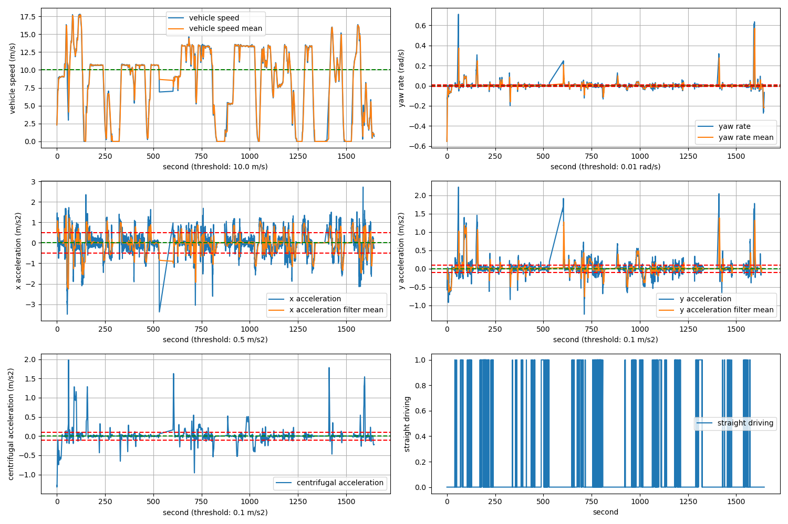
The convergence of each camera
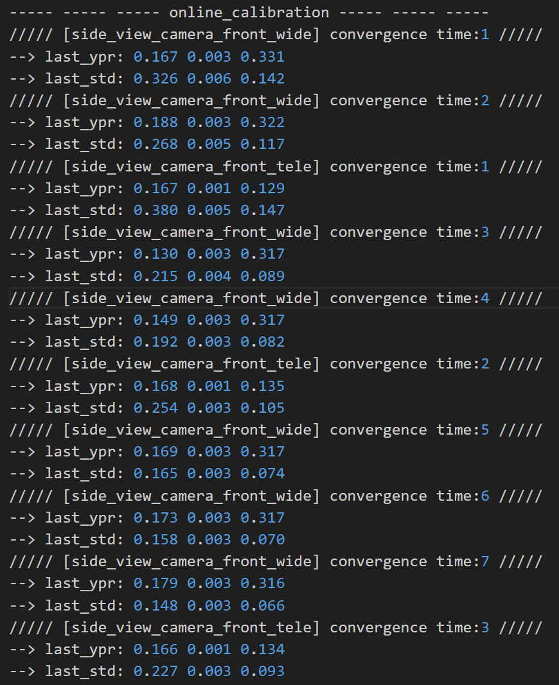 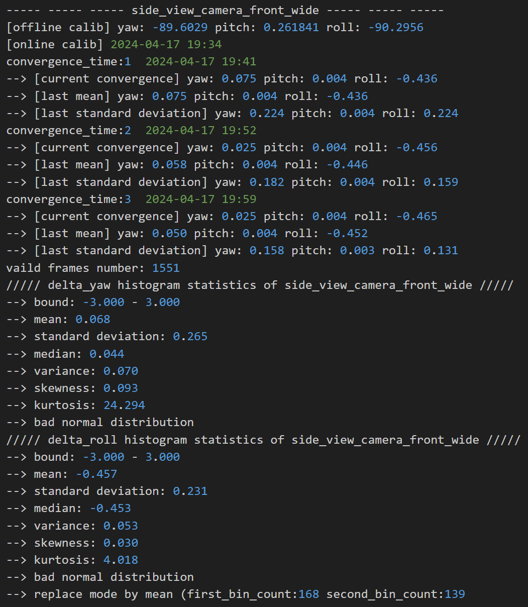 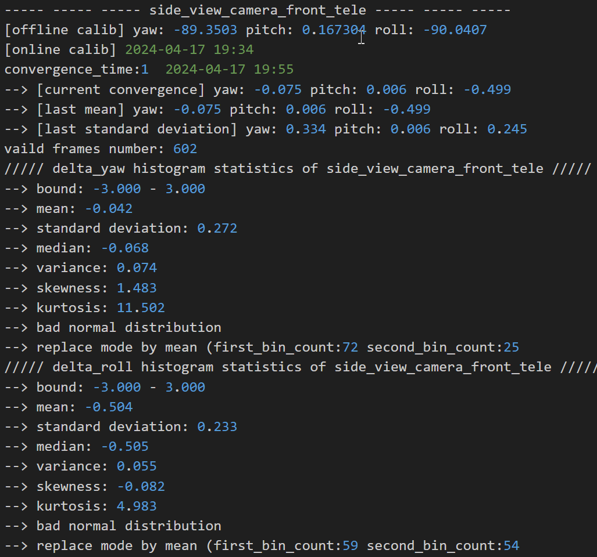
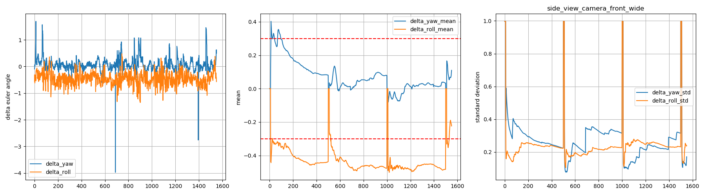 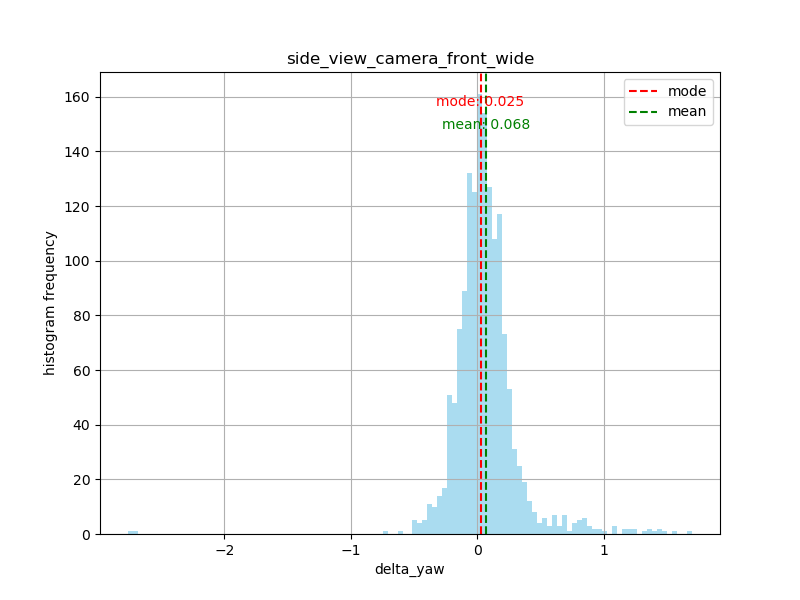 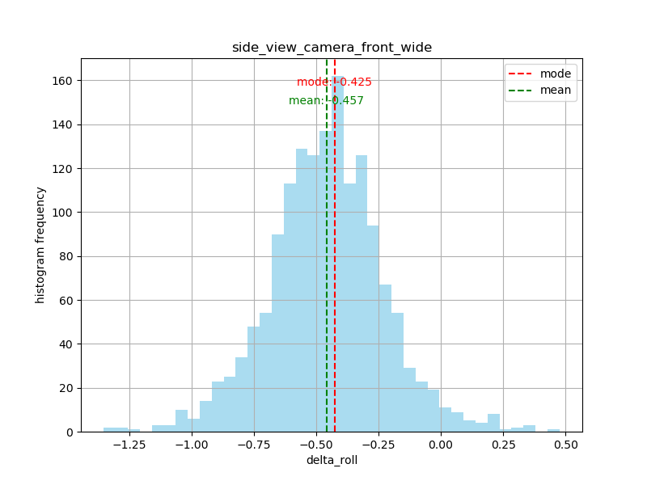
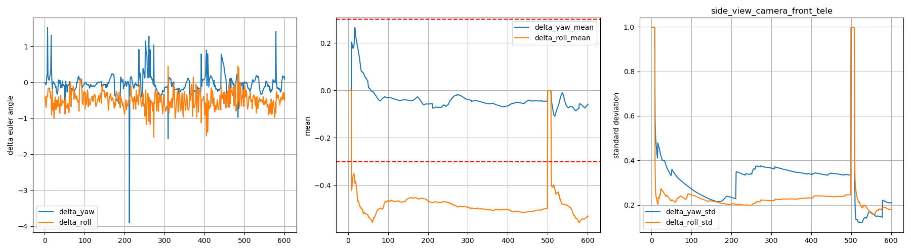 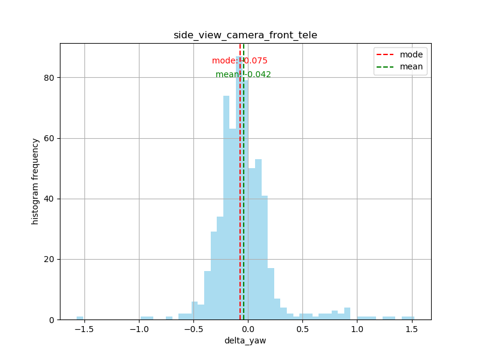 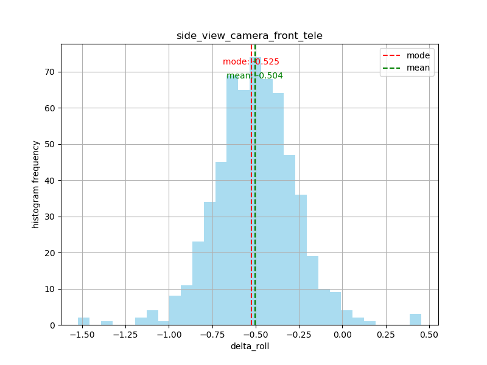
The parameters of Office and Online in Persistency change
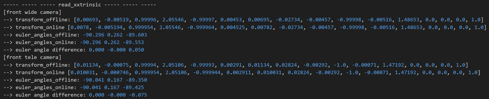
3. Upload results
Online calibration data archiving path: \\ bosch.com\dfsrb\DfsCN\DIV\XC\Engineering\domain\WAVE3\00_DataExchange\online_calibration
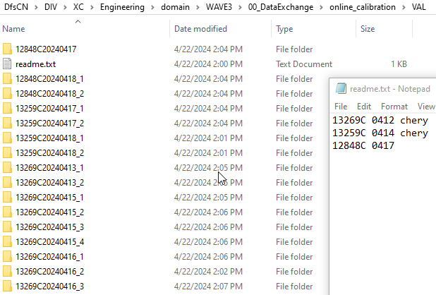 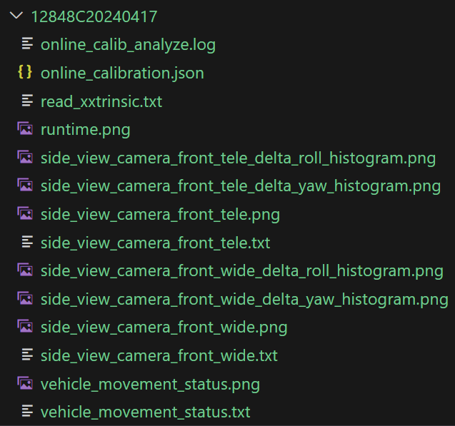
Batch Data Analysis Reference instructions (please understand and modify in -depth before use)
$ find d irectory -type d -exec sh -c 'python online_calib_analyze.py "$0" > "$0/online_calib_analyze.log"' {} \;